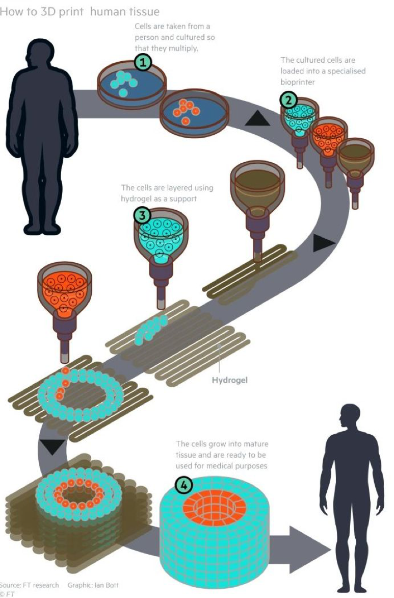

This week’s look at innovation is focused on a highly innovative 3D printing of living human cells developed by Organovo of San Diego California. The Organovo process takes cells from donor organs and transforms them into a printable bio-ink. Layers of cells are laid down in calculated designs to build up small sections of living cells.
The most recent application is the successful deposition of living liver cells. The bio-printed liver tissue could initially be used as a new technique of testing drug safety instead of using test animals or clinical trials while avoiding risks associated with live testing. This outstanding development will lead to new therapy testing and improved safety of drug regimens.
New livers, hearts, kidneys, other internal organs are the holy grail of 3D bio-printing. While the Organovo development is a long way from printing whole organs, it is the first step toward this long sought goal. Recently, in December 2017, Organovo announced that the US Food and Drug Administration granted orphan drug designation to the 3D Liver cell printing for treatment of alpha-1 antitrypsin deficiency, a rare inherited condition.
See a short Organovo video on the process. Could this be a paradigm changer? What do you think?